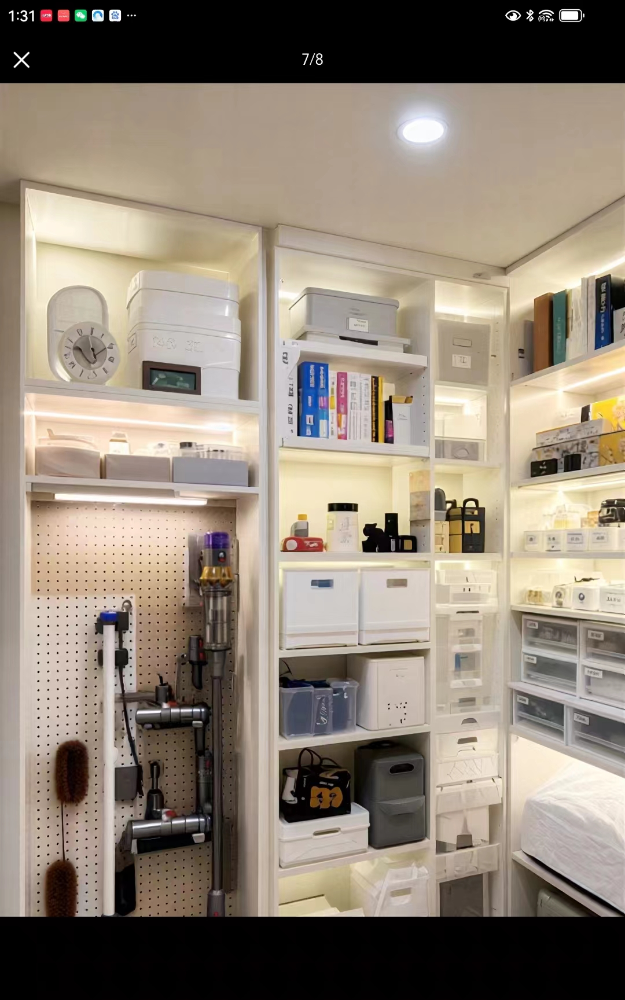
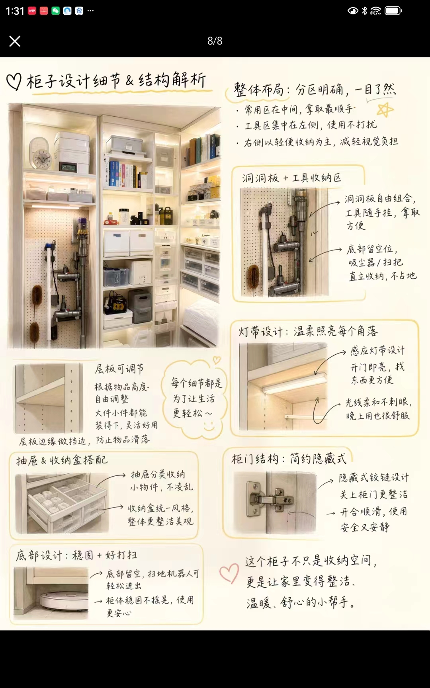
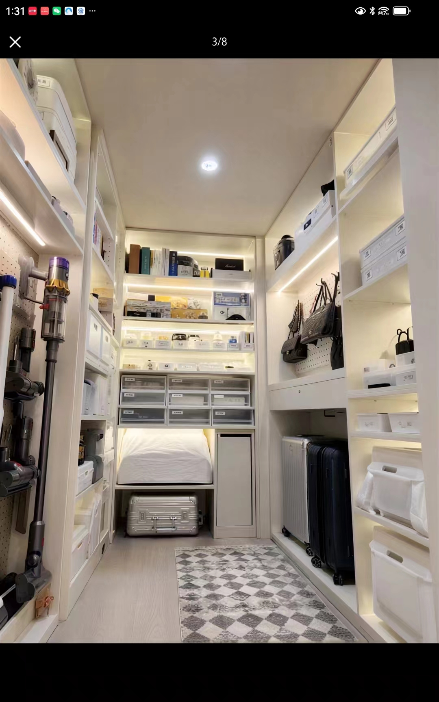
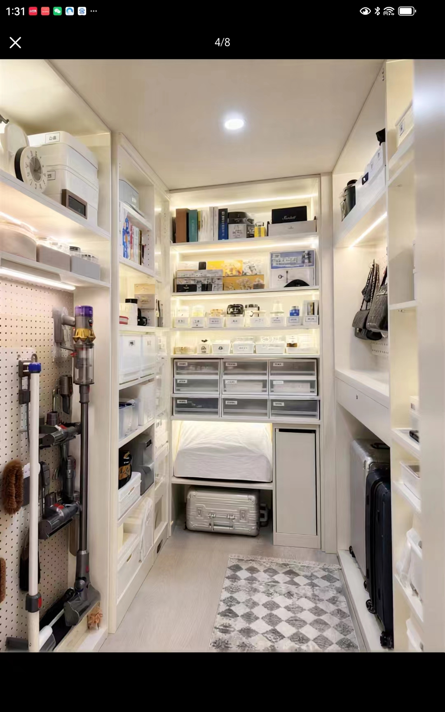
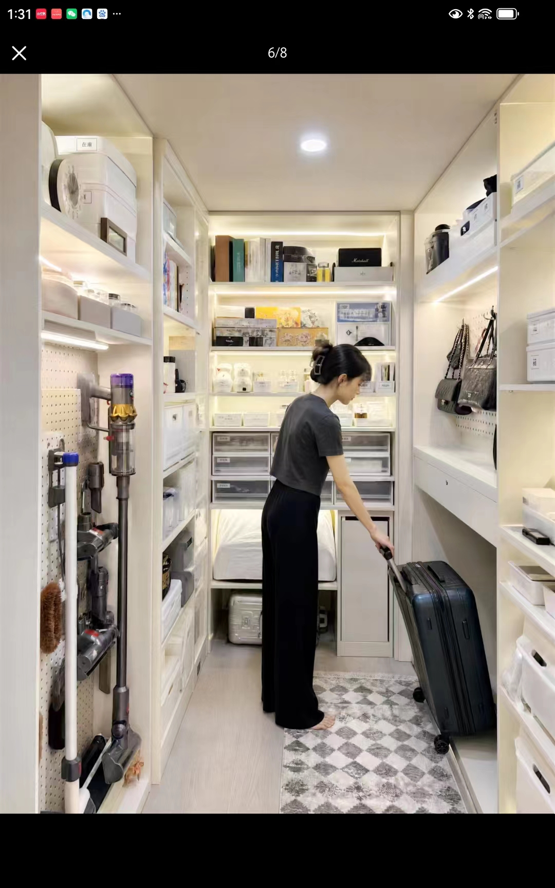
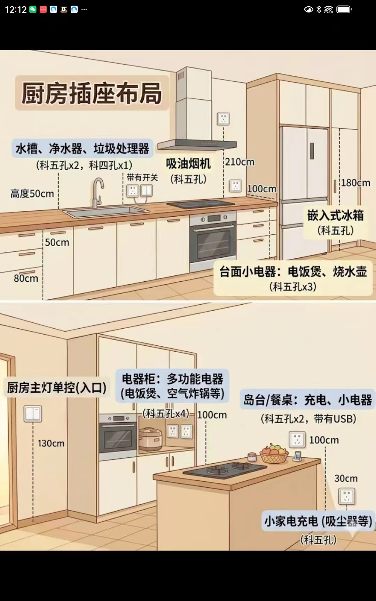
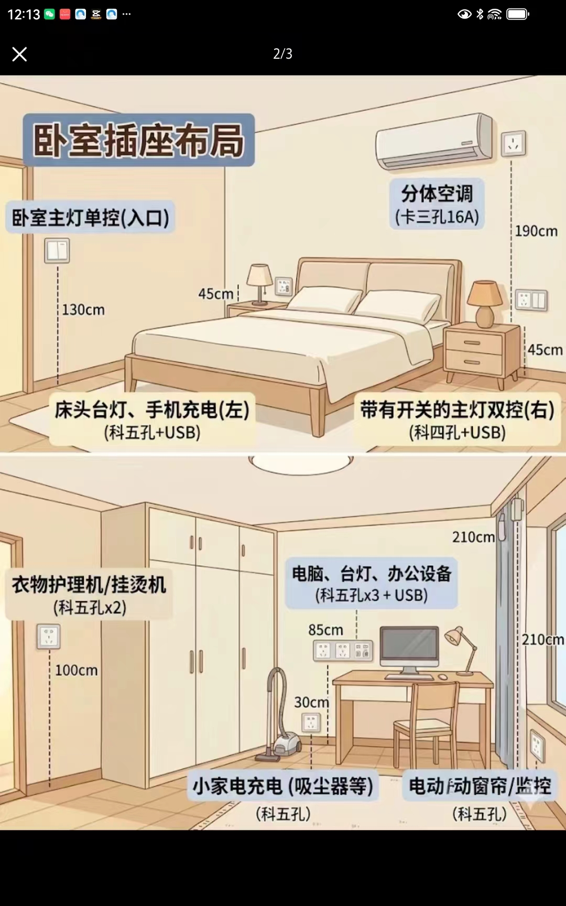
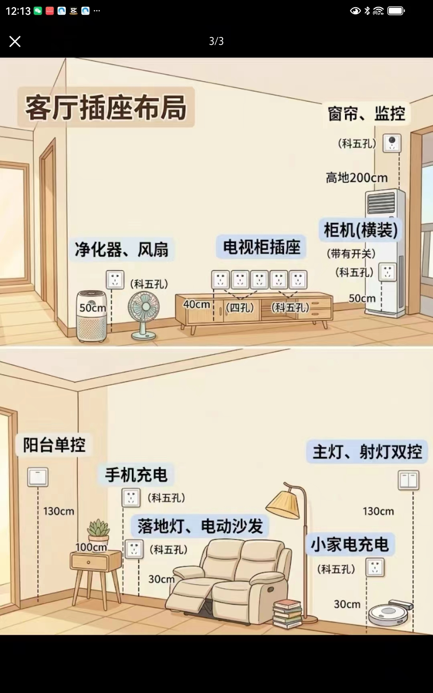

核心問題
物品混放、拿取不便、櫃內光線不足、地面容易堆放雜物。
Interior Design Assignment
以真實收納櫃案例為起點，練習從物品盤點、使用者動線、分區配置、材料五金到圖面表達，完成一個兼具實用與美感的小空間收納設計。

Assignment Goal
請為一個小空間設計一組高效收納櫃。設計必須兼顧物品分類、拿取順手、視覺整潔、照明清楚、清潔容易與施工可行。
物品混放、拿取不便、櫃內光線不足、地面容易堆放雜物。
讓使用者快速找到物品、順手取用、容易歸位，並讓空間保持整潔。
提出分區配置、材料五金、照明規劃、圖面與 300 字設計說明。
Case Study
觀察圖片中的分區、收納配件、照明、五金與使用者動作，再把觀察轉成自己的設計條件。




Outlet Planning
設計收納櫃與小空間時，同步思考照明、手機充電、清潔家電、廚房電器與監控窗簾等設備位置，避免完成後才發現插座不足或高度不順手。



Design Process
先理解使用者與物品，再把需求轉成空間、尺寸與構造。
找出分區、層板、抽屜、洞洞板、燈帶與使用者動線。
列出至少 20 項物品，區分高頻、低頻、大型、小型與清潔工具。
決定上層、中層、下層、側邊、底部與走道的使用方式。
繳交圖面、材料五金、使用流程、概念句與設計說明。
Worksheet
請依老師指定或自行設定尺寸。條件越清楚，後續設計判斷越容易成立。
| 項目 | 條件 | 設計提醒 |
|---|---|---|
| 空間寬度 | 影響櫃體格數與走道寬度。 | |
| 空間深度 | 確認抽屜、門片與大型物品能否拉出。 | |
| 空間高度 | 高處適合放低頻、輕量物品。 | |
| 走道寬度 | 需讓人轉身、蹲下、拉行李箱。 | |
| 牆面條件 | 例如可打釘、不可打釘、有插座、有樑柱。 | |
| 使用者人數 | 多人共用時，需要更清楚的標籤與分區。 | |
| 特殊需求 | 例如高齡者、兒童、教室多人共用、需要上鎖。 |
Requirements
設計需同時回應功能、細節、安全與維護。下列項目是評分時會檢查的基本要求。
Submission
繳交前請確認每一項都已完成。若缺少圖面、材料或概念說明，作品會難以評分。
Advanced Challenge
完成基本任務後，可擇一深化，讓作品更接近真實設計案。
加入手工具、夾具、砂紙、耗材與安全用品，思考多人共用與工具歸位。
降低彎腰與墊腳需求，增加照明、易握把手與清楚標示。
不破壞牆面，使用可移動、可拆解、可重組的收納方式。